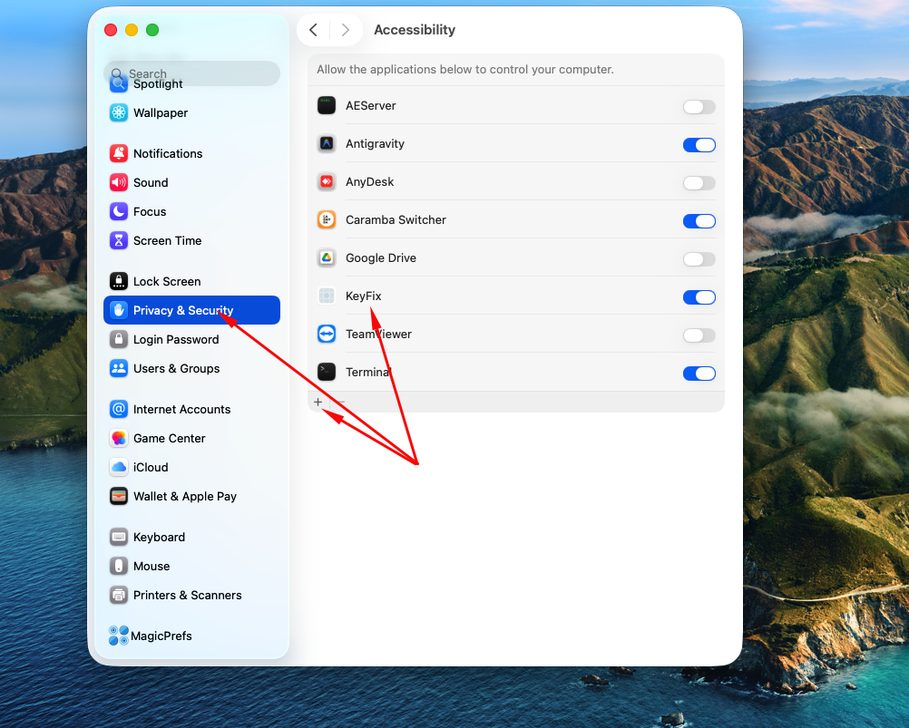
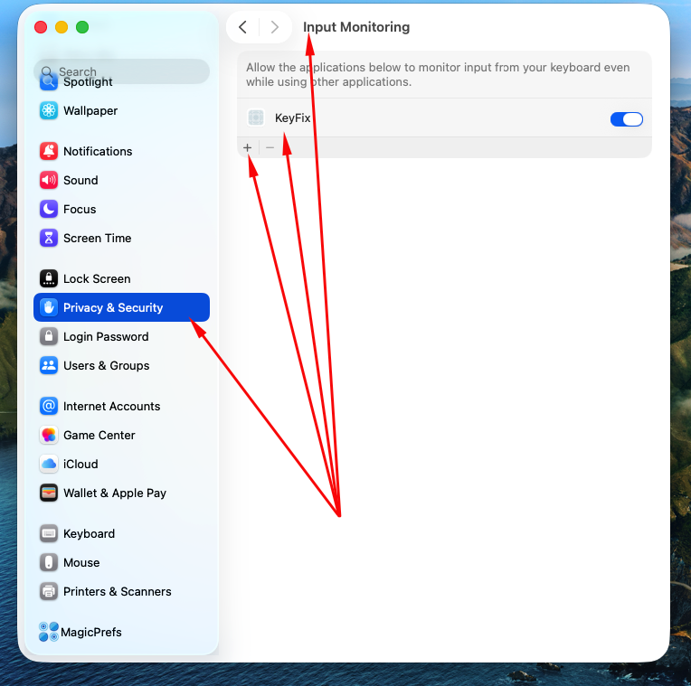

Keyboard layout converter for macOS
Find KeyFix and click Get or Buy.
Launch KeyFix from Launchpad or your Applications folder. A keyboard icon will appear in the menu bar at the top of your screen.
KeyFix needs exactly two permissions to work. Without both — it will not function. Follow the steps below carefully.
KeyFix requires two permissions in macOS System Settings. Both must be enabled — if either is missing, the app will not work.
Allows KeyFix to automatically delete the mistyped text and type the corrected version.
Open System Settings (Apple menu → System Settings)
Click Privacy & Security in the left sidebar
Scroll down and click Accessibility
Find KeyFix in the list and turn the toggle ON (blue)
macOS may ask for your password — enter it to confirm

Allows KeyFix to detect what you are typing so it knows what text to convert.
Stay in Privacy & Security (same place as above)
Scroll down and click Input Monitoring
Find KeyFix in the list and turn the toggle ON (blue)
macOS may ask for your password — enter it to confirm

KeyFix not in the list? Make sure you have launched KeyFix at least once before opening System Settings. Close System Settings and re-open it — then look again.
After granting both permissions, you do not need to restart your Mac. KeyFix starts working immediately.
Double-tap the Option (Alt) key to convert the last typed text
For example, you started typing in Russian but needed English, or vice versa.
Press the Option / Alt key twice quickly — within half a second. You will hear a short beep — that means conversion started.
KeyFix deletes the mistyped text and types the corrected version in the same place. Works in any app — browsers, messengers, editors, terminals.
If the first conversion is not what you wanted, double-tap Option again — KeyFix will convert to the next available layout.
Important: do not move the cursor with arrow keys, click with the mouse, or press Enter / Escape / Tab between typing and converting — this resets the buffer and KeyFix will have nothing to convert.
KeyFix remembers everything you typed in the last 15 seconds. You can convert even after a long word or full sentence — as long as you did not move the cursor.
Check that both permissions are granted (Accessibility AND Input Monitoring). If one is missing, KeyFix cannot work. Go to System Settings → Privacy & Security and verify both toggles are ON.
Accessibility permission is missing. KeyFix detected the double-tap but cannot type the replacement. Enable it in System Settings → Privacy & Security → Accessibility.
Input Monitoring permission is missing. KeyFix is not receiving keyboard events. Enable it in System Settings → Privacy & Security → Input Monitoring.
Click the keyboard icon in the menu bar → Settings and check which layouts are enabled. Make sure only the layouts you actually use are turned on (e.g. English + Russian).
Some apps with strict security restrictions may block key injection. Try the conversion in another app to confirm KeyFix is working correctly.
Try relaunching KeyFix from the Applications folder. If the menu bar is full, icons may be hidden — drag the keyboard icon into view while holding ⌘.
A hollow keyboard icon means KeyFix is paused. Click it → Resume to activate it again.
Click the keyboard icon in the menu bar → Quit KeyFix.
No. All processing happens locally on your Mac. Nothing is ever sent anywhere. See our Privacy Policy.
Still not working? We are happy to help.
✉️ kompua@gmail.com